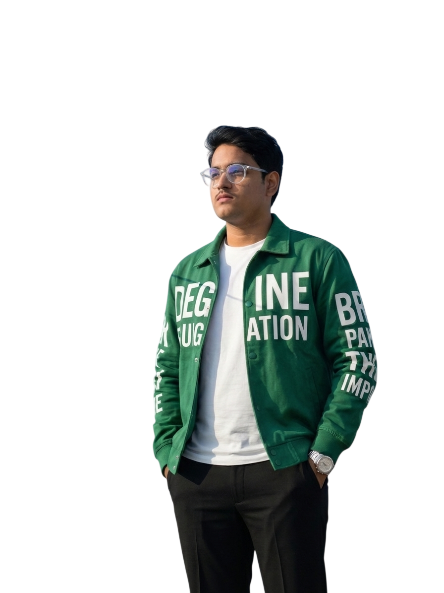

I lead AI engineering teams and build production intelligent systems across healthcare AI, LLMs, and real-time conversational systems. Passionate about privacy-preserving machine learning, scalable RAG architectures, and creating software that delivers real-world impact.

I'm an Artificial Intelligence Team Lead & AI/ML Engineer leading an engineering team of 9 at Livewell Services Private Limited. I oversee end-to-end AI architecture, model engineering, and scalable production deployment across healthcare AI, intelligent automation, and real-time conversational systems.
My work sits at the intersection of applied research and scalable engineering — from shipping LLM, RAG, and Voice AI pipelines to designing lightweight cryptographic algorithms for edge devices and offline conversational agents that keep user data strictly private.
Beyond leading engineering teams, I mentor peers in machine learning and algorithmic problem-solving, publish research on Zenodo and Medium, and actively drive rapid prototyping to turn emerging technologies into scalable products.
It started as a random thought on a Sunday — whether a wearable, AI-assisted approach to continuous cardiac monitoring could help people notice meaningful changes in their heart health earlier. That question became research, and the research became a prototype I'm now actively testing. It's still early, and there is a great deal I don't yet know. Working carefully, because in healthcare, rigor matters more than speed.
A lightweight bit-level symmetric encryption algorithm designed for resource-constrained environments, with application to secure edge AI data transmission. Demonstrates strong diffusion, statistical robustness, and near-ideal entropy on grayscale image encryption.
A theoretical model and quantitative metric — the Transferability Index (TI) — to study how AI systems carry learned knowledge to new, unseen tasks. Analyzes how dataset diversity, model capacity, and task complexity interact to influence generalization beyond training data.
A fully offline mental health chatbot using transformer-based local LLMs, eliminating cloud dependency to ensure complete user data privacy. Evaluated trade-offs between model size, response coherence, and computational constraints in low-connectivity environments.
Computer vision system for monocular depth estimation using deep neural networks to infer scene geometry from single RGB images. Built real-time visualization pipeline with obstacle detection via depth thresholding.
Real-time vehicle detection and classification system optimized for low-visibility environments. Integrated contrast enhancement and dehazing filters achieving ~8–10% improvement over baseline YOLOv8 in foggy conditions.
AI-driven image enhancement pipeline for Permanently Shadowed Region lunar images from OHRC camera. Applied preprocessing and contrast enhancement for improved visibility in low-light shadowed regions. SIH 2024 Grand Finale project.
Real-time ISS tracking web application using Three.js and WebGL — live satellite coordinates mapped onto a 3D globe with dynamic orbital path rendering and periodic API updates. Full interactive web experience.
Offline RAG system architecture using FAISS, sentence-transformers, and lightweight local LLM inference for knowledge retrieval without internet connectivity. Published as a technical article on Medium — guidelines for edge deployment of LLMs with data leakage protection, prompt injection mitigation, and stateless architecture design.
A tiny but useful VS Code extension that nudges you to drink water while you code. Sends hourly Windows desktop notifications with a sound, tracks your daily water intake in the status bar, and resets automatically every morning. Built after too many days of looking up at 5 PM and realizing I hadn't had a single glass of water.
This section will showcase repositories, contributions, and community tools.
Currently being populated — check back soon or visit GitHub directly.
Independently secured $15,000 in funding for a wearable, AI-assisted cardiac monitoring research prototype. Started as a question on a Sunday; now an active, funded research project.
Finalist among 88,221 teams (4,92,960 students from 2,600 institutes). Competed in 36-hour national finale at Gujarat Technological University, Ahmedabad.
Awarded for best AI-based innovation at an inter-state hackathon. Served as Team Leader among 200+ participants from multiple Indian states.
Led a 4-member team to deliver a functional solution under 24-hour constraints among 160+ students across all academic years.
Open to research collaborations, ML engineering roles, and interesting problems. If you're working on edge AI, privacy-preserving systems, or just want to talk ML — reach out.